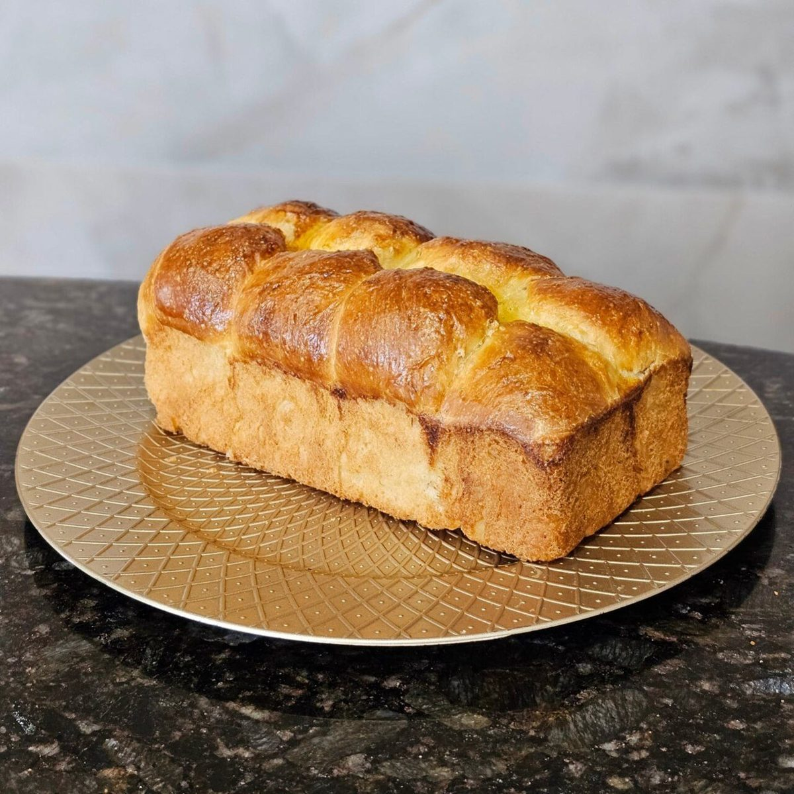

ベーカリー / 三重県伊勢市宮町
ベーカリーショップトム
三重県伊勢市宮町1丁目にあるベーカリー「ベーカリーショップトム」のご案内ページです。営業時間やメニューなど、詳しいことは準備中。まずはInstagramをのぞいてみてください。

制作側の連想(お店の理念・由来とは無関係)
「ト」はヘラ、「ム」は山形
店名の由来は分かりません。制作側は、カタカナの形からパン屋の道具と姿を連想しました。「ト」は長い柄に小さな突起がある形で、パンを窯へ差し入れる長いヘラのよう。「ム」は上がとがった三角で、こんもり焼き上がった山形のパンのよう。そこでこのページは、「ト」と「ム」の2つの章で組み立てています。お店の考えとは関係のない、制作側の連想です。
章1
ト 差し入れる
窯に差し入れて焼く、そんな場面を連想したイメージ写真です(お店の工程を示すものではありません)。


章2
ム 山形にふくらむ
山形のシルエットで選んだイメージ写真です。国外・撮影地不明のフリー素材で、お店の商品ではありません。



ご案内
お店のこと(確認できたものだけ)
| 所在地 | 〒516-0077 三重県伊勢市宮町1丁目12-18 |
|---|---|
| 電話 | 0596-23-5255 |
| 営業時間 | 準備中 |
| 定休日 | 準備中 |
| ご予約 | 準備中 |
| 駐車場 | 準備中 |
| SNS | Instagram @tombakerytom |